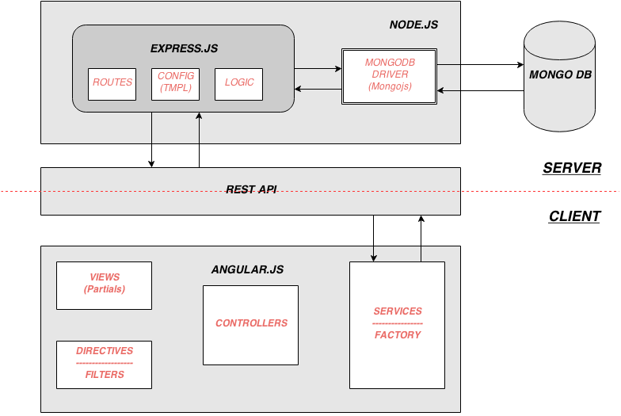

Day 5 M.E.A.N.
Mongodb.Expressjs.Angualarjs.Nodejs
Quick Overview of
M.E.A.N.
Node.js
- Javascript on server, run on Google Chrome's V8
- Global object is
processunlike
windowin a browser
- High concurrency
- Non-blocking and evented
- Commonjs module system
More info
Express.js
- Web application framework for Node.js
- Serverside MVC framework
- Parses request, manages routes and sessions
- Templating support (
JADE/EJS/HJS | LESS/STYLUS)
- Driven by Middlewares
More info
MongoDB
- An open-source document database
- Supports Rich document-based queries, Indexing, Replication, Auto-Sharding
- Database consists of collections and each collection consists of documents
- Uses BSON to manage documents
- Collections are Schema-less
- Use Mongoose to emaulate schema from Node.js/Express.js
More info
Angular.js
- Angular is what HTML would have been had it been designed for application
- Client side driven Apps, to keep them scalable and manageable
- Impements Separation of Concerns
- Not a Javascript library/ Not a 2 way data binding library
- Consists of models, views, controllers, filters, directives, factories among other things
More info
Entry Criteria & Exit Criteria

Ready-made MEAN solutions
Ready-made MEAN solutions
meanjs.org
Yo - Grunt - Bower
$ npm install -g yo grunt bower generator-meanjs
Scaffold an App
$ yo meanjs
meanjs.org
Slush - Gulp - Bower
$ npm install -g slush gulp bower slush-meanjs
Scaffold an App
$ slush meanjs
meanjs.org
Quick Hands on
meanjs.org
New Folder
myMEANApp
$ npm install -g slush gulp bower slush-meanjs
Scaffold the App
$ slush meanjs
Start MongoDB
$ mongod
Run the app
$ gulp
http://localhost:3000
Approach
- Step 1 : Scaffold/Build Express.js server
- Step 2 : Integrated Mongojs/MongoDB drivers
- Step 3 : Build the server side end points and logic
- Step 4 : Scaffold/setup Angular.js project & build UI
- Step 5 : Integrate Angular.js factory with Express.js Routes
ToDo App Approach
- Step 1 : Scaffold/Build Express.js server
- Step 2 : Integrated Mongojs/MongoDB drivers
- Step 3 : Build the server side end points and logic
- Step 4 : Scaffold/setup Angular.js project & build UI
- Step 5 : Integrate Angular.js factory with Express.js Routes
Thanks!
Your feedback is highly appreciated
@arvindr21